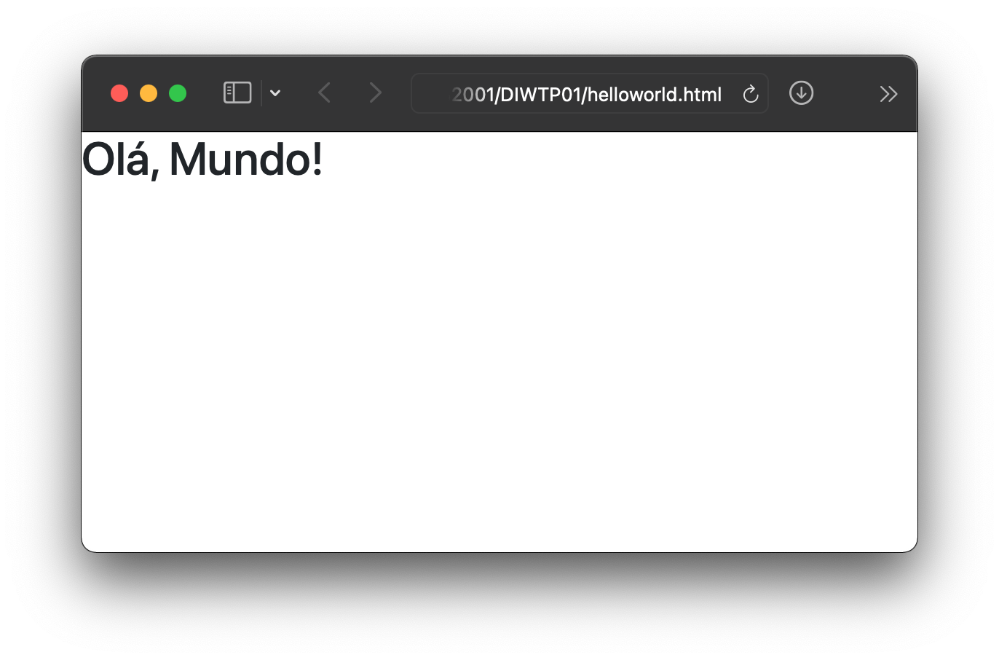

Originalmente, o
Antes de ser uma estrutura de código-fonte aberto, o
O
Copie e cole o
<link href="https://cdn.jsdelivr.net/npm/bootstrap@5.1.1/dist/css/bootstrap.min.css" rel="stylesheet" integrity="sha384-F3w7mX95PdgyTmZZMECAngseQB83DfGTowi0iMjiWaeVhAn4FJkqJByhZMI3AhiU" crossorigin="anonymous">
Muitos componentes do
Coloque um dos seguintes <script>s logo acima da linha de fechamento da </body>, para habilitá-los:
<script src="https://cdn.jsdelivr.net/npm/bootstrap@5.1.1/dist/js/bootstrap.bundle.min.js" integrity="sha384-/bQdsTh/da6pkI1MST/rWKFNjaCP5gBSY4sEBT38Q/9RBh9AH40zEOg7Hlq2THRZ" crossorigin="anonymous"></script>
<script src="https://cdn.jsdelivr.net/npm/@popperjs/core@2.9.3/dist/umd/popper.min.js" integrity="sha384-W8fXfP3gkOKtndU4JGtKDvXbO53Wy8SZCQHczT5FMiiqmQfUpWbYdTil/SxwZgAN" crossorigin="anonymous"></script>
<script src="https://cdn.jsdelivr.net/npm/bootstrap@5.1.1/dist/js/bootstrap.min.js" integrity="sha384-skAcpIdS7UcVUC05LJ9Dxay8AXcDYfBJqt1CJ85S/CFujBsIzCIv+l9liuYLaMQ/" crossorigin="anonymous"></script>
Certifique-se de configurar suas páginas com os mais recentes padrões de design e desenvolvimento. Isso significa usar um doctype HTML5 e incluir uma meta
<!doctype html>
<html lang="en">
<head>
<!-- Tags meta necessárias: -->
<meta charset="utf-8">
<meta name="viewport" content="width=device-width, initial-scale=1">
<!-- CSS Bootstrap -->
<link href="https://cdn.jsdelivr.net/npm/bootstrap@5.1.1/dist/css/bootstrap.min.css" rel="stylesheet" integrity="sha384-F3w7mX95PdgyTmZZMECAngseQB83DfGTowi0iMjiWaeVhAn4FJkqJByhZMI3AhiU" crossorigin="anonymous">
<title>Olá, Mundo!</title>
</head>
<body>
<h1>Olá, Mundo!</h1>
<!-- JavaScripts adicionais; escolha um dos dois! -->
<!-- Opção 1: Bootstrap Bundle com Popper -->
<script src="https://cdn.jsdelivr.net/npm/bootstrap@5.1.1/dist/js/bootstrap.bundle.min.js" integrity="sha384-/bQdsTh/da6pkI1MST/rWKFNjaCP5gBSY4sEBT38Q/9RBh9AH40zEOg7Hlq2THRZ" crossorigin="anonymous"></script>
<!-- Opção 2: Popper separado e JS Bootstrap -->
<script src="https://cdn.jsdelivr.net/npm/@popperjs/core@2.9.3/dist/umd/popper.min.js" integrity="sha384-W8fXfP3gkOKtndU4JGtKDvXbO53Wy8SZCQHczT5FMiiqmQfUpWbYdTil/SxwZgAN" crossorigin="anonymous"></script>
<script src="https://cdn.jsdelivr.net/npm/bootstrap@5.1.1/dist/js/bootstrap.min.js" integrity="sha384-skAcpIdS7UcVUC05LJ9Dxay8AXcDYfBJqt1CJ85S/CFujBsIzCIv+l9liuYLaMQ/" crossorigin="anonymous"></script>
</body>
</html>
Visualmente, a página deve aparecer assim:
Parabéns,
https://getbootstrap.com/docs/5.1/getting-started/introduction/